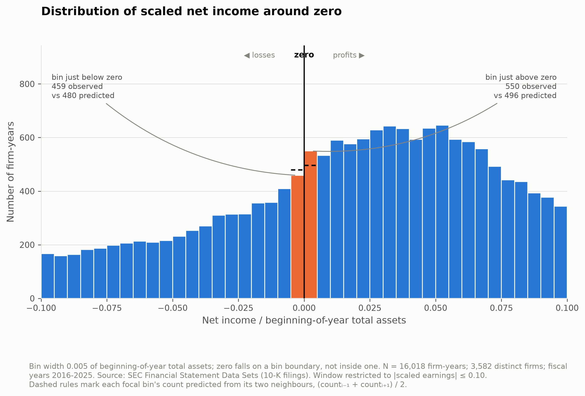
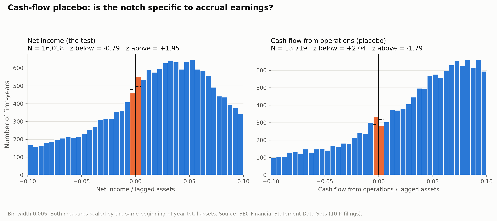

If earnings were unmanaged, the cross-firm distribution of net income should be smooth. There is no economic reason for a break at exactly zero. A manager near a small loss has discretion — so does the distribution show a notch?
XBRL-derived flat files, no authentication. Schema verified against the live 2026q1 archive before writing the loader. 113.2 million fact rows scanned.
Why 10-Ks only: a 10-K carries the comparative balance sheet, so one filing supplies both current-year and prior-year total assets — the lagged denominator, from the filer's own comparative column.
| Filter | dropped | remaining |
|---|---|---|
| raw 10-K firm-years | — | 57,407 |
| fiscal years 2016–25 + missing SIC | 691 | 56,716 |
| financial firms (SIC 6000–6999) | 14,590 | 42,126 |
| utilities (SIC 4900–4949) | 1,404 | 40,722 |
| missing net income / bad lagged assets | 1,467 | 39,255 |
| size floor: lagged assets ≥ $10m | 8,011 | 31,244 |
| one filing per firm-year | 4 | 31,240 |
| window |ROA| ≤ 0.10 | 15,222 | 16,018 |
Filters fixed before results were inspected. Every exclusion counted in the README.
expected_i = (count_{i−1} + count_{i+1}) / 2, standardized with the
binomial variance. ROA = NetIncome_t / TotalAssets_{t−1} — beginning-of-year
assets, always.
Three commitments, made before looking at any output and enforced in code:

| bin width | z below zero | p | z above zero | p |
|---|---|---|---|---|
| 0.0025 | −0.31 | 0.75 | +1.91 | 0.057 |
| 0.005 | −0.79 | 0.43 | +1.95 | 0.051 |
| 0.01 | −0.87 | 0.38 | +1.73 | 0.083 |
Fewer small losses and more small profits than neighbours predict, at every width — the predicted sign. But the deficit below zero is never significant, and the surplus above sits right at the 0.05 boundary.
Size terciles show no concentration in small firms (z = −0.25 / −0.26 / −0.91), and the result is flat across size floors from $0 to $500m.
| denominator | N | z below | p | z above | p |
|---|---|---|---|---|---|
| lagged total assets | 16,018 | −0.79 | 0.43 | +1.95 | 0.051 |
| revenue | 13,452 | −2.97 | 0.003 | +4.62 | <0.001 |
| lagged book equity | 7,177 | −1.20 | 0.23 | +1.61 | 0.11 |
Revenue scaling produces a clean, significant notch at all three bin widths. Assets and book equity produce nothing. The result is a property of the scaling choice as much as of the earnings — which is exactly what Durtschi & Easton (2005) argued, arriving here empirically.
